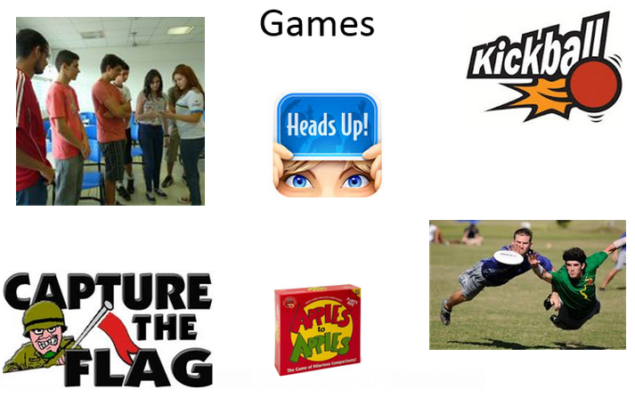

Cultural Sunday(){
Mundo Acadêmico
Por: Suelen Cristina Cremonini
Percebendo a necessidade de aprimorar a proficiência em língua inglesa dos estudantes universitários brasileiros, especialmente para sua participação no programa Ciência sem Fronteiras (CsF), o Governo Federal criou o Inglês sem Fronteiras (IsF), programa que oferta, gratuitamente, cursos de língua inglesa presenciais e à distância, além da aplicação de testes de proficiência.
O IsF surgiu, inicialmente, para qualificar as universidades públicas a se tornarem centros aplicadores do Test of English as a Foreign Language (TOEFL), o que ajudaria a atender à demanda do CsF. Além disso, o programa é também um incentivador para a participação dos estudantes no curso My English Online (MEO), outra ferramenta oferecida pelo governo para estudantes aprimorarem seu inglês, pois oferece cursos intensivos presenciais para estudantes com conta ativa.
Além das aulas oferecidas pelo programa, outras formas de didática são empregadas, este artigo apresentará você leitor, a uma delas: Cultural Sunday. Neste ano de 2014 houve a primeira edição do evento, ocorrida dia 25 de maio entre 09h00min e 15h30min no campus Santa Mônica.
Alguns participantes, esta que lhes escreve sendo um deles, ficaram curiosos sobre alguns aspectos específicos a respeito do evento, então procurei alguns organizadores - Lorena Rochael e Dayane Motta, e trouxe as respostas a algumas dúvidas:

Diversão garantida com jogos comuns na terra do Tio Sam!
- Como surgiu a ideia do evento?
"Surgiu do Núcleo dos professores e coordenadores, pouco depois do próprio IsF. Decidimos criar o evento para repor algumas horas relativas às férias e para fazer com que os alunos tivessem uma imersão cultural nos costumes Norte Americanos. O Cultural Sunday focou então nos seguintes aspectos: imersão cultural na vida acadêmica americana, informações sobre universidades e suas respectivas pontuações para que os alunos ingressem no CSF. Além disso, tivemos apresentações culturais, danças, jogos, filmes e, claro, comida!"
- Demorou quanto tempo para ser organizado?
"Mais ou menos 1 mês. Pensamos em como faríamos para juntar diversão com informação. Tivemos a ajuda fundamental dos ETAs (English Teaching Assistents) - Norte Americanos que estão no Brasil para ajudar-nos a tornar o programa cada vez mais eficiente."
- Houve apoio de algum órgão/empresa?
"Tivemos o apoio do ILEEL (Instituto de Letras e Linguística, órgão da própria Universidade Federal de Uberlândia) e da PROGRAD, que ofereceu o café da manhã. Além disso, tivemos palestrantes importantes que expuseram aspectos relevantes sobre a vida acadêmica fora do Brasil. Contamos também com todo o apoio e organização de nossos coordenadores ISF: Valeska Virgínia, Ivan Ribeiro, Ernesto Bertoldo e Waldenor Moraes".
- Como foi escolhida a programação?
"A programação foi escolhida durante inúmeras reuniões de núcleo. Os coordenadores juntamente com professores e os ETA´s pensaram e avaliaram diversas atividades, até chegarmos a um consenso do que seria ideal para o evento. No final, decidimos por atividades interativas, divertidas que estivessem ligadas ao universo acadêmico a serem executadas sempre na língua inglesa."
Participantes aprendendo a dançar o The Wobble!
- Quantas pessoas participaram?
"Tivemos em torno de 500 inscrições, com a participação quase integral de todos os inscritos."
- Há previsão para uma próxima edição? Se sim, quando?
"Ainda não há previsão para uma próxima edição, mas é provável que faremos, dado o sucesso do primeiro encontro! Se houver, a próxima edição será realizada durante a próxima oferta de cursos presenciais ISF (que inclusive estão com inscrições abertas até dia 02 de julho site do IsF, com início das aulas dia 14 de julho)."
- O que os organizadores acharam?
"Os organizadores ficaram satisfeitos com o resultado do CULTURAL SUNDAY! Foi melhor do que esperávamos e estamos ansiosos para repetir a dose na próxima oferta. Os alunos foram muito receptivos e demonstraram bastante interesse nas atividades. Continuem nos acompanhando pelo facebook INGLÊS SEM FRONTEIRAS UFU. Até!!"
Agora é só aguardar pela próxima edição do evento, correr para se inscrever e aproveitar ao máximo!
Referências:
}